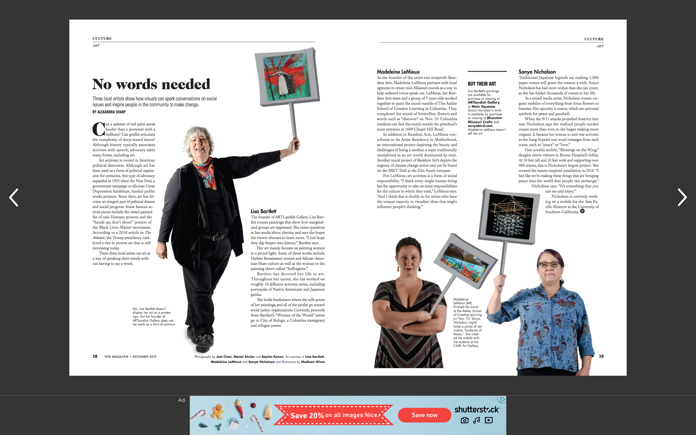

I am responsible for the culture section of both the print and online edition of the magazine. I pitch stories to writers, edit content, plan art and put the pages together for each issue.
I was in charge of the editorial calendar at this Houston magazine. I found events, wrote blurbs and fact-checked content during the summer of 2019

The story on the right "He's Young and Country" is one that I pitched, and edited.
"No Words Needed" is about three women who use art as a way of activism. Planning the photoshoots for this piece was so much fun.
Experience editing, fact-checking and writing for news publications
Experience using Adobe programs such as InDesign, Illustrator and Photoshop